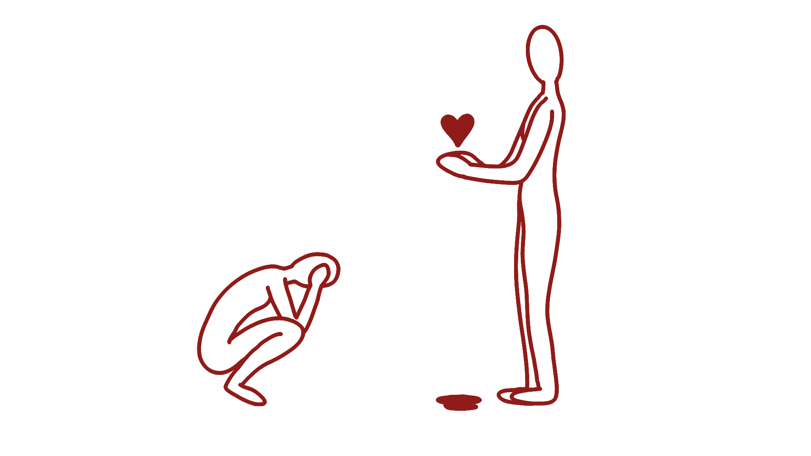
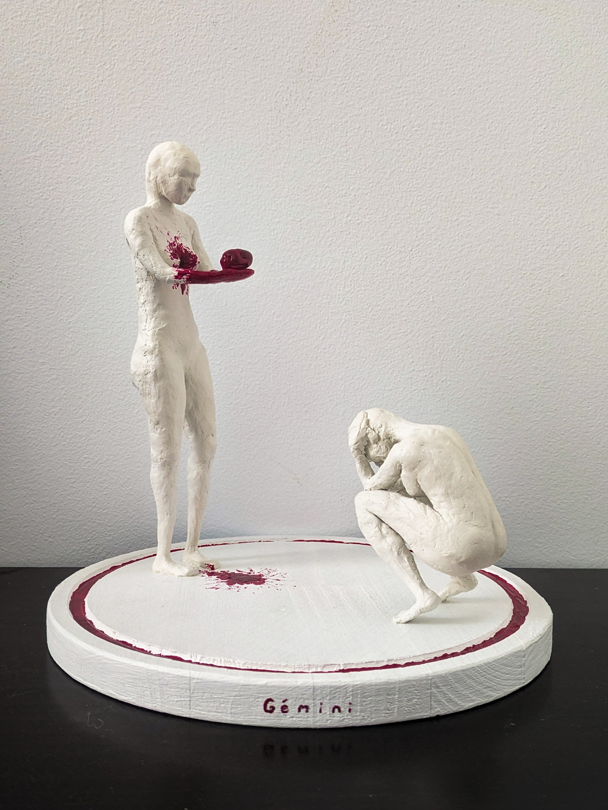

<!DOCTYPE html>
<html lang="en">
<head>
  <meta charset="UTF-8" />
  <meta name="viewport" content="width=device-width, initial-scale=1.0" />
  <title>Gémini · Constanza Kostyushko</title>
  <link rel="preconnect" href="https://fonts.googleapis.com" />
  <link href="https://fonts.googleapis.com/css2?family=Cormorant+Garamond:ital,wght@0,400;0,500;0,600;1,400;1,500&family=Playfair+Display:ital,wght@0,400;0,700;1,400;1,700&family=Caveat:wght@400;700&family=Anton&display=swap" rel="stylesheet" />
  <script src="https://unpkg.com/react@18/umd/react.development.js"></script>
  <script src="https://unpkg.com/react-dom@18/umd/react-dom.development.js"></script>
  <script src="https://unpkg.com/@babel/standalone@7/babel.min.js"></script>
  <style>
    *, *::before, *::after { box-sizing: border-box; margin: 0; padding: 0; }
    html { scroll-behavior: smooth; }
    body {
      background: #f5ead0;
      font-family: 'Cormorant Garamond', Georgia, serif;
      color: #2a1f15;
      overflow-x: hidden;
    }
    ::selection { background: #a82020; color: #faf3df; }
    ::-webkit-scrollbar { width: 7px; }
    ::-webkit-scrollbar-track { background: #f5ead0; }
    ::-webkit-scrollbar-thumb { background: #a82020; border-radius: 4px; }
    ::-webkit-scrollbar-thumb:hover { background: #6a1414; }

    body::before {
      content: ""; position: fixed; inset: 0; pointer-events: none; z-index: 9000;
      background-image: url("data:image/svg+xml,%3Csvg viewBox='0 0 200 200' xmlns='http://www.w3.org/2000/svg'%3E%3Cfilter id='n'%3E%3CfeTurbulence type='fractalNoise' baseFrequency='0.9' numOctaves='3' stitchTiles='stitch'/%3E%3C/filter%3E%3Crect width='100%25' height='100%25' filter='url(%23n)' opacity='0.5'/%3E%3C/svg%3E");
      opacity: 0.18; mix-blend-mode: multiply;
    }

    @keyframes fadeUp { from { opacity:0; transform:translateY(28px); } to { opacity:1; transform:translateY(0); } }
    @keyframes drawLine { from { stroke-dashoffset: 1500; } to { stroke-dashoffset: 0; } }
    @keyframes float { 0%,100%{transform:translateY(0px)} 50%{transform:translateY(-6px)} }
    @keyframes pulseRed { 0%,100%{opacity:0.75} 50%{opacity:1} }

    .serif    { font-family: 'Cormorant Garamond', serif; }
    .display  { font-family: 'Playfair Display', serif; }
    .hand     { font-family: 'Caveat', cursive; }
    .anton    { font-family: 'Anton', sans-serif; }
  </style>
</head>
<body>
  <div id="root"></div>

  <script type="text/babel">
    const { useState, useEffect, useRef, useContext, createContext } = React;

    const C = {
      bg:       "#f5ead0",
      bgSoft:   "#faf3df",
      bgDeep:   "#ecdcb3",
      cream:    "#2a1f15",
      creamDim: "#5a4630",
      mute:     "#8a7559",
      red:      "#a82020",
      redDeep:  "#6a1414",
      redBright:"#c43030",
      gold:     "#9b7228",
      goldDeep: "#6a4f1a",
      line:     "#d4c4a0",
    };

    const T = {
      en: {
        nav: { back: "← back to art portfolio", proj: "Gémini" },
        meta: {
          venue: "IES Vicente Espinel · Málaga",
          date: "31 March 2025",
          medium: "Sculpture · air dry clay on wooden base · ~18 cm",
          brief: "Imágenes Poéticas · final artistic product",
        },
        hero: {
          tagline: "a poetry to sculpture project",
          title1: "Gémini",
          title2: "si su corazón no fuera el mío...",
          subtitle: "the duality of self, told as a sculpture and two poems",
        },
        intro: {
          h: "the brief",
          body: "The assignment was to translate a poem into a visual artwork, and I picked two. The name Gémini comes from blending Spanish Géminis with English Gemini, the astrological sign of the twins, a sign defined by duality and by holding two contradictory selves at once, which also happens to be my own sign. I wanted the project to live in two languages, two poems, and two figures sharing one base.",
        },
        poemsHeader: {
          h: "the two poems",
          sub: "I paired one poem of self sacrifice with one of self acceptance, then sculpted the two figures on the base as the two voices of those poems, holding a conversation neither one can win alone.",
        },
        poem1: {
          poet: "Gabriela Mistral",
          title: "La otra",
          theme: "duality and internal conflict",
          excerptLabel: "the stanza that decided the sculpture",
          excerpt: "Doblarse no sabía\nla planta de montaña,\ny al costado de ella,\nyo me doblaba...",
          gloss: "Reading this I understood the standing figure: a free self, accepting her imperfections, finding peace. And next to her, the supposedly perfect self who eliminated her flaws and now bends in pain, more than anyone.",
          figure: "The crouching figure. She is looking into the future, anticipating what it will feel like to kill the version of herself she does not love. Anguished, conflicted, choosing.",
        },
        poem2: {
          poet: "Dulce María Loynaz",
          title: "Quiéreme entera",
          theme: "unconditional love and self acceptance",
          excerptLabel: "the line that became the whole piece",
          excerpt: "¡Quiéreme toda…\nO no me quieras!",
          gloss: "An ultimatum. If you cannot love me as I am, your love is no use to me. A line I should probably learn to say out loud more often.",
          figure: "The standing figure. She has torn out her own heart and is holding it out. The choice she offers is binary. Take this and care for it, loving me whole, or crush it, and kill us both, because we are the same person.",
        },
        sculpture: {
          h: "the sculpture",
          body: "Two figures, around 18 cm tall, built on one wooden base. Both have a wire armature soldered for rigidity, then are slowly built up in air dry clay using the join technique of scoring, wetting, and pressing. The wire feet anchor into drilled holes in the base, the base is painted white, and the only painted detail on the figures is the blood, in red nail polish.",
          process: ["wire skeleton, soldered", "anatomy studied for weeks first", "clay applied in layers so the inside dries too", "base drilled, painted white, figures anchored", "blood, in red nail polish, painted last"],
        },
        processSection: {
          h: "from the studio",
          title: "while it was being made",
          body: "A few glimpses of the work in progress. Wire being soldered, clay being slowly built up around the armatures.",
          steps: [
            { src: "gemini-process-1-soldering.jpg",   title: "Soldering the wire skeleton",  ratio: "4 / 3" },
            { src: "gemini-process-2-standing.jpg",    title: "Standing figure, in progress", ratio: "3 / 4" },
            { src: "gemini-process-3-crouching-a.jpg", title: "Crouching figure",             ratio: "3 / 4" },
            { src: "gemini-process-3-crouching-b.jpg", title: "Crouching figure",             ratio: "3 / 4" },
            { src: "gemini-process-3-crouching-c.jpg", title: "Crouching figure",             ratio: "3 / 4" },
          ],
        },
        refs: {
          h: "references",
          title: "two artists I looked at",
          body: "While planning the piece I kept returning to two artists. One for the language layered into sculpted form, one for paintings that carry their own story right on the surface.",
          plensa: {
            name: "Jaume Plensa Suñé",
            note: "Spanish sculptor known for human figures built from letters and symbols, adding language as a layer on form. His Jerusalem was the work that pulled me in.",
          },
          frida: {
            name: "Frida Kahlo",
            note: "Mexican painter who put words and phrases into her paintings to deepen them. Las dos Fridas was the work that most directly informed Gémini.",
          },
        },
        footer: {
          back: "← back to the rest of the work",
          credit: "© Constanza Kostyushko · please do not download or reuse without permission",
          poemCredit: "Poems quoted here belong to their respective authors. Excerpts only, used as personal interpretation. Gémini was exhibited at IES Vicente Espinel, Málaga, on 31 March 2025.",
        },
      },

      es: {
        nav: { back: "← volver al portafolio artístico", proj: "Gémini" },
        meta: {
          venue: "IES Vicente Espinel · Málaga",
          date: "31 de marzo, 2025",
          medium: "Escultura · arcilla de secado al aire sobre base de madera · ~18 cm",
          brief: "Imágenes Poéticas · producto artístico final",
        },
        hero: {
          tagline: "un proyecto de poesía a escultura",
          title1: "Gémini",
          title2: "si su corazón no fuera el mío...",
          subtitle: "la dualidad del ser, contada como una escultura y dos poemas",
        },
        intro: {
          h: "la consigna",
          body: "La consigna era traducir un poema en una pieza visual, y elegí dos. El nombre Gémini viene de unir el español Géminis con el inglés Gemini, el signo astrológico de los gemelos, un signo definido por la dualidad y por sostener dos versiones contradictorias de uno mismo al mismo tiempo, que además resulta ser mi propio signo. Quería que el proyecto viviera en dos idiomas, dos poemas, y dos figuras compartiendo una sola base.",
        },
        poemsHeader: {
          h: "los dos poemas",
          sub: "Emparejé un poema de sacrificio propio con uno de aceptación propia, y después esculpí las dos figuras sobre la base como las dos voces de esos poemas, sosteniendo una conversación que ninguna puede ganar sola.",
        },
        poem1: {
          poet: "Gabriela Mistral",
          title: "La otra",
          theme: "dualidad y conflicto interno",
          excerptLabel: "la estrofa que decidió la escultura",
          excerpt: "Doblarse no sabía\nla planta de montaña,\ny al costado de ella,\nyo me doblaba...",
          gloss: "Leyendo esto entendí a la figura de pie: una persona libre que aceptó sus imperfecciones, encontró la paz. Y a su lado, la supuestamente perfecta, que eliminó sus defectos, y ahora se dobla de dolor, más que nadie.",
          figure: "La figura agachada. Está mirando al futuro, anticipando lo que sentirá al matar la versión de sí misma que no quiere. Angustiada, en conflicto, eligiendo.",
        },
        poem2: {
          poet: "Dulce María Loynaz",
          title: "Quiéreme entera",
          theme: "amor incondicional y aceptación propia",
          excerptLabel: "el verso que se convirtió en toda la pieza",
          excerpt: "¡Quiéreme toda…\nO no me quieras!",
          gloss: "Un ultimátum. Si no me podés amar tal como soy, tu amor no me sirve. Un verso que probablemente debería aprender a decir en voz alta más seguido.",
          figure: "La figura de pie. Se arrancó el corazón y lo ofrece. La elección que da es binaria. Tomá esto y cuídalo, queriéndome entera, o aplástalo, y matanos a las dos, porque somos la misma persona.",
        },
        sculpture: {
          h: "la escultura",
          body: "Dos figuras, de unos 18 cm cada una, sobre una sola base de madera. Las dos tienen un esqueleto de alambre soldado para que no se doblen, y después se construyen lentamente con arcilla de secado al aire usando la técnica de unión, rayando, mojando, y presionando. Los pies de alambre se anclan en agujeros perforados en la base, la base está pintada de blanco, y el único detalle pintado en las figuras es la sangre, en esmalte de uñas rojo.",
          process: ["esqueleto de alambre, soldado", "anatomía estudiada durante semanas primero", "arcilla aplicada en capas para que también seque por dentro", "base perforada, pintada de blanco, figuras ancladas", "la sangre, en esmalte rojo, pintada al final"],
        },
        processSection: {
          h: "del taller",
          title: "mientras se estaba haciendo",
          body: "Algunos destellos del trabajo en progreso. El alambre soldándose, la arcilla construyéndose lentamente alrededor de los esqueletos.",
          steps: [
            { src: "gemini-process-1-soldering.jpg",   title: "Soldando el esqueleto de alambre", ratio: "4 / 3" },
            { src: "gemini-process-2-standing.jpg",    title: "Figura de pie, en progreso",       ratio: "3 / 4" },
            { src: "gemini-process-3-crouching-a.jpg", title: "Figura agachada",                  ratio: "3 / 4" },
            { src: "gemini-process-3-crouching-b.jpg", title: "Figura agachada",                  ratio: "3 / 4" },
            { src: "gemini-process-3-crouching-c.jpg", title: "Figura agachada",                  ratio: "3 / 4" },
          ],
        },
        refs: {
          h: "referentes",
          title: "dos artistas que miré",
          body: "Mientras planeaba la pieza estuve volviendo a dos artistas. Uno por el lenguaje incorporado a la forma esculpida, otra por pinturas que llevan su propia historia escrita en la superficie.",
          plensa: {
            name: "Jaume Plensa Suñé",
            note: "Escultor español conocido por figuras humanas hechas de letras y símbolos, agregando el lenguaje como una capa sobre la forma. Su Jerusalem fue la obra que más me llamó.",
          },
          frida: {
            name: "Frida Kahlo",
            note: "Pintora mexicana que ponía palabras y frases en sus cuadros para darles más profundidad. Las dos Fridas fue la obra que más directamente informó a Gémini.",
          },
        },
        footer: {
          back: "← volver al resto del trabajo",
          credit: "© Constanza Kostyushko · por favor no descargar ni reusar sin permiso",
          poemCredit: "Los poemas citados pertenecen a sus respectivos autores. Solo extractos, usados como interpretación personal. Gémini fue expuesta en el IES Vicente Espinel, Málaga, el 31 de marzo de 2025.",
        },
      },
    };

    /* ─── HOOKS ─── */
    function useInView(threshold = 0.12) {
      const ref = useRef(null);
      const [inView, setInView] = useState(false);
      useEffect(() => {
        const el = ref.current; if (!el) return;
        const obs = new IntersectionObserver(([e]) => { if (e.isIntersecting) { setInView(true); obs.disconnect(); } }, { threshold });
        obs.observe(el);
        return () => obs.disconnect();
      }, [threshold]);
      return [ref, inView];
    }
    function Reveal({ children, delay = 0, from = "bottom" }) {
      const [ref, inView] = useInView();
      const tf = { bottom: "translateY(28px)", left: "translateX(-28px)", right: "translateX(28px)" };
      return (
        <div ref={ref} style={{
          opacity: inView ? 1 : 0,
          transform: inView ? "none" : tf[from],
          transition: `opacity 0.9s cubic-bezier(.22,1,.36,1) ${delay}s, transform 0.9s cubic-bezier(.22,1,.36,1) ${delay}s`,
        }}>{children}</div>
      );
    }

    /* ─── SIDE DROPS (decorative red drops along the margins of the whole page) ─── */
    /* These are positioned absolutely against a full-page container so they SCROLL with the page,
       and they sit further inward from the edge so they don't crowd the screen border. Doubled in count. */
    function SideDrops() {
      const drops = [
        // The opening drop sits on the LEFT to match the cadence of alternating sides.
        { side: "left",  top: "4%",   rot:   4, delay: 0.0, scale: 0.95 },
        { side: "right", top: "9%",   rot:  -8, delay: 1.2, scale: 0.95 },
        { side: "left",  top: "14%",  rot:   6, delay: 0.8, scale: 0.90 },
        { side: "right", top: "20%",  rot:  -4, delay: 2.0, scale: 1.05 },
        { side: "left",  top: "26%",  rot:   9, delay: 1.5, scale: 0.95 },
        { side: "right", top: "32%",  rot: -10, delay: 0.4, scale: 0.90 },
        { side: "left",  top: "38%",  rot:   3, delay: 2.4, scale: 1.00 },
        { side: "right", top: "44%",  rot:  -6, delay: 0.6, scale: 0.85 },
        { side: "left",  top: "50%",  rot:   5, delay: 1.0, scale: 0.95 },
        { side: "right", top: "56%",  rot:  -3, delay: 1.8, scale: 1.00 },
        { side: "left",  top: "62%",  rot:   8, delay: 0.3, scale: 0.90 },
        { side: "right", top: "68%",  rot:  -9, delay: 2.2, scale: 0.95 },
        { side: "left",  top: "74%",  rot:   2, delay: 0.7, scale: 1.05 },
        { side: "right", top: "80%",  rot:  -5, delay: 1.4, scale: 0.90 },
        { side: "left",  top: "86%",  rot:   7, delay: 0.5, scale: 0.95 },
        { side: "right", top: "92%",  rot:  -7, delay: 1.9, scale: 0.85 },
      ];
      return (
        <div aria-hidden="true" style={{
          position: "absolute", top: 0, left: 0, right: 0, bottom: 0,
          pointerEvents: "none", zIndex: 1, overflow: "hidden",
        }}>
          {drops.map((d, i) => (
            <svg key={i}
              width={38 * d.scale} height={50 * d.scale} viewBox="0 0 38 50"
              style={{
                position: "absolute",
                top: d.top,
                [d.side]: "4.5%",
                transform: "rotate(" + d.rot + "deg)",
                pointerEvents: "none",
                opacity: 0.62,
                animation: "pulseRed 5s ease-in-out infinite",
                animationDelay: d.delay + "s",
              }}>
              <path d="M19 4 Q 4 22, 4 32 A 15 15 0 1 0 34 32 Q 34 22, 19 4 Z" fill={C.red}/>
            </svg>
          ))}
        </div>
      );
    }

    /* ─── NAV ─── */
    function Nav({ lang, setLang, t }) {
      const [scrolled, setScrolled] = useState(false);
      useEffect(() => {
        const h = () => setScrolled(window.scrollY > 40);
        window.addEventListener("scroll", h);
        return () => window.removeEventListener("scroll", h);
      }, []);
      return (
        <nav style={{
          position: "fixed", top: 0, left: 0, right: 0, zIndex: 100,
          padding: "0 1.5rem", height: 56,
          display: "flex", alignItems: "center", justifyContent: "space-between",
          background: scrolled ? "rgba(10,10,10,0.94)" : "transparent",
          borderBottom: scrolled ? `1px solid ${C.line}` : "1px solid transparent",
          backdropFilter: scrolled ? "blur(10px)" : "none",
          transition: "background 0.3s, border-color 0.3s",
        }}>
          <a href="art-portfolio.html#sculpture" className="hand" style={{
            color: C.cream, fontSize: 17, textDecoration: "none", letterSpacing: "0.02em",
            transition: "color 0.2s, transform 0.2s", display: "inline-block",
          }}
            onMouseEnter={e => { e.currentTarget.style.color = C.red; e.currentTarget.style.transform = "translateX(-2px)"; }}
            onMouseLeave={e => { e.currentTarget.style.color = C.cream; e.currentTarget.style.transform = "none"; }}
          >{t.nav.back}</a>

          <span className="display" style={{
            fontSize: 22, fontStyle: "italic", color: C.cream,
            letterSpacing: "0.04em",
          }}>{t.nav.proj}<span style={{ color: C.red }}>.</span></span>

          <div style={{ display: "flex", alignItems: "center", gap: 4 }}>
            {["en","es"].map(code => {
              const active = lang === code;
              return (
                <button key={code} onClick={() => setLang(code)} style={{
                  background: "none", border: "none", cursor: active ? "default" : "pointer",
                  fontSize: 12, fontWeight: active ? 700 : 400,
                  color: active ? C.red : C.creamDim, letterSpacing: "0.08em",
                  padding: "2px 6px",
                  borderBottom: active ? `1px solid ${C.red}` : "1px solid transparent",
                  fontFamily: "'Cormorant Garamond', serif",
                  transition: "color 0.2s, border-color 0.2s",
                }}
                  onMouseEnter={e => { if (!active) e.currentTarget.style.color = C.cream; }}
                  onMouseLeave={e => { if (!active) e.currentTarget.style.color = C.creamDim; }}
                >{code.toUpperCase()}</button>
              );
            })}
          </div>
        </nav>
      );
    }

    /* ─── HERO ─── */
    function Hero({ t }) {
      return (
        <header style={{
          position: "relative", minHeight: "92vh",
          display: "flex", alignItems: "center", justifyContent: "center",
          padding: "120px 1.5rem 4rem", overflow: "hidden",
        }}>
          {/* the simplified graphic, sitting BEHIND the title, much more visible */}
          <div style={{
            position: "absolute", inset: 0,
            display: "flex", alignItems: "center", justifyContent: "center",
            pointerEvents: "none",
          }}>
             {
                e.currentTarget.style.display = "none";
                const fb = e.currentTarget.nextElementSibling;
                if (fb) fb.style.display = "flex";
              }}
              style={{
                width: "min(1640px, 118%)", maxHeight: "118%", objectFit: "contain",
                opacity: 0.78,
                filter: "drop-shadow(0 0 60px rgba(168,32,32,0.4))",
                mixBlendMode: "multiply",
                transform: "translateY(6%)",
              }}
            />
            {/* fallback when gemini-graphic.png is missing — shows what file to save */}
            <div style={{
              display: "none", alignItems: "center", justifyContent: "center",
              flexDirection: "column", gap: 8,
              padding: "1.4rem 2rem",
              border: "2px dashed " + C.red,
              background: "rgba(245,234,208,0.6)",
              maxWidth: 460,
            }}>
              <span className="hand" style={{ color: C.red, fontSize: "1.4rem" }}>missing file</span>
              <code style={{ background: C.red, color: C.bg, padding: "4px 12px", fontSize: 13, letterSpacing: "0.08em" }}>
                gemini-graphic.png
              </code>
              <span className="serif" style={{ color: C.creamDim, fontSize: 13, fontStyle: "italic" }}>
                save your figure drawing here to fill this in
              </span>
            </div>
          </div>

          {/* soft vignette that fades the graphic toward the page edges instead of pure black */}
          <div style={{
            position: "absolute", inset: 0,
            background: "radial-gradient(ellipse at center, transparent 0%, transparent 45%, " + C.bg + " 92%)",
            pointerEvents: "none",
          }}/>

          {/* drop of blood, decorative */}
          <svg width="38" height="50" viewBox="0 0 38 50" style={{
            position: "absolute", top: "16%", left: "12%",
            animation: "pulseRed 5s ease-in-out infinite",
          }}>
            <path d="M19 4 Q 4 22, 4 32 A 15 15 0 1 0 34 32 Q 34 22, 19 4 Z" fill={C.red}/>
          </svg>

          <div style={{ position: "relative", zIndex: 2, textAlign: "center", maxWidth: 880 }}>
            {/* Letters that overlap the red graphic get a cream halo so they stay legible.
                paintOrder + WebkitTextStroke draws a thin cream outline around each glyph;
                on cream background it blends invisibly, on red it forms a clear contrast ring. */}
            <p className="hand" style={{
              fontSize: "1.6rem", color: C.red, marginBottom: 18,
              letterSpacing: "0.02em",
              animation: "fadeUp 1.2s ease both",
              paintOrder: "stroke fill",
              WebkitTextStroke: `5px ${C.bg}`,
            }}>{t.hero.tagline}</p>
            <h1 className="display" style={{
              fontSize: "clamp(4rem, 12vw, 9rem)",
              fontWeight: 700, fontStyle: "italic", lineHeight: 0.95,
              color: C.cream, marginBottom: 12,
              animation: "fadeUp 1.2s ease 0.05s both",
            }}>
              {t.hero.title1}<span style={{ color: C.red }}>.</span>
            </h1>
            <p className="serif" style={{
              fontSize: "clamp(1.25rem, 2.6vw, 1.8rem)",
              fontStyle: "italic", color: C.creamDim,
              marginBottom: "2rem", letterSpacing: "0.02em",
              animation: "fadeUp 1.2s ease 0.15s both",
              paintOrder: "stroke fill",
              WebkitTextStroke: `5px ${C.bg}`,
            }}>"{t.hero.title2}"</p>
            <p className="serif" style={{
              fontSize: "1.2rem", color: C.mute, maxWidth: 600, margin: "0 auto",
              fontStyle: "italic", lineHeight: 1.55,
              animation: "fadeUp 1.2s ease 0.25s both",
              paintOrder: "stroke fill",
              WebkitTextStroke: `4px ${C.bg}`,
            }}>{t.hero.subtitle}</p>

            <div style={{
              marginTop: "3rem", display: "inline-flex", gap: "1.5rem", flexWrap: "wrap",
              justifyContent: "center", fontSize: 13, color: C.mute,
              letterSpacing: "0.08em",
              animation: "fadeUp 1.2s ease 0.35s both",
              paintOrder: "stroke fill",
              WebkitTextStroke: `4px ${C.bg}`,
            }}>
              <span>{t.meta.venue}</span>
              <span style={{ color: C.line }}>·</span>
              <span>{t.meta.date}</span>
              <span style={{ color: C.line }}>·</span>
              <span>{t.meta.brief}</span>
            </div>
          </div>

          <div style={{
            position: "absolute", bottom: 24, left: "50%", transform: "translateX(-50%)",
            animation: "float 3s ease-in-out infinite",
          }}>
            <span className="hand" style={{ color: C.mute, fontSize: 15, letterSpacing: "0.1em" }}>↓</span>
          </div>
        </header>
      );
    }

    /* ─── INTRO ─── */
    function Intro({ t }) {
      return (
        <section style={{ padding: "5rem 1.5rem 4rem", position: "relative" }}>
          <div style={{ maxWidth: 760, margin: "0 auto" }}>
            <Reveal>
              <p className="serif" style={{
                fontSize: "1.35rem", lineHeight: 1.75, color: C.cream,
                fontStyle: "italic", textAlign: "center",
              }}>{t.intro.body}</p>
            </Reveal>
          </div>
        </section>
      );
    }

    /* ─── DIVIDER ─── */
    function Divider() {
      return (
        <div style={{ maxWidth: 740, margin: "2rem auto", textAlign: "center" }}>
          <svg width="180" height="22">
            <path d="M 5 14 Q 45 4, 90 14 T 175 12" fill="none" stroke={C.red} strokeWidth="1.5" strokeLinecap="round"
              style={{ strokeDasharray: 200, animation: "drawLine 2s ease-out forwards" }}/>
          </svg>
        </div>
      );
    }

    /* ─── POEMS, SIDE BY SIDE ─── */
    function Poems({ t }) {
      const Poem = ({ p, side }) => (
        <Reveal from={side === "left" ? "left" : "right"} delay={side === "right" ? 0.15 : 0}>
          <article style={{
            background: C.bgSoft, padding: "2.5rem 2rem",
            border: `1px solid ${C.line}`,
            borderTop: `3px solid ${C.red}`,
            position: "relative",
            height: "100%",
          }}>
            {/* small drop ornament */}
            <svg width="14" height="20" viewBox="0 0 14 20" style={{ position: "absolute", top: -10, left: "50%", transform: "translateX(-50%)" }}>
              <path d="M7 1 Q 1 9, 1 13 A 6 6 0 1 0 13 13 Q 13 9, 7 1 Z" fill={C.red}/>
            </svg>

            <h3 className="display" style={{
              fontSize: "clamp(2.4rem, 4.2vw, 3.2rem)",
              fontStyle: "italic", color: C.cream,
              marginBottom: 6, lineHeight: 1.1,
            }}>{p.title}</h3>
            <p className="serif" style={{
              color: C.creamDim, fontSize: "1.05rem",
              letterSpacing: "0.04em", marginBottom: "0.4rem",
              fontStyle: "italic",
            }}>{p.poet} · {p.theme}</p>

            <blockquote className="serif" style={{
              borderLeft: `3px solid ${C.red}`,
              paddingLeft: "1.2rem", marginLeft: 0,
              fontStyle: "italic", color: C.cream,
              fontSize: "1.35rem", lineHeight: 1.55,
              whiteSpace: "pre-line",
              margin: "1.8rem 0 1.5rem",
            }}>{p.excerpt}</blockquote>

            <p className="serif" style={{
              color: C.creamDim, fontSize: "1.15rem", lineHeight: 1.7,
              fontStyle: "italic", marginBottom: "1.4rem",
            }}>{p.gloss}</p>

            <p className="serif" style={{
              color: C.cream, fontSize: "1.1rem", lineHeight: 1.65,
              paddingLeft: "1.2rem",
              borderLeft: "2px solid " + C.gold,
            }}>
              <span className="hand" style={{ color: C.gold, fontSize: "1rem", letterSpacing: "0.06em", display: "block", marginBottom: 4 }}>
                in the sculpture
              </span>
              {p.figure}
            </p>
          </article>
        </Reveal>
      );

      return (
        <section style={{ padding: "4rem 1.5rem", position: "relative" }}>
          <div style={{ maxWidth: 1200, margin: "0 auto" }}>
            <Reveal>
              <div style={{ textAlign: "center", marginBottom: "3rem" }}>
                <h2 className="display" style={{
                  fontSize: "clamp(2.2rem, 5vw, 3.4rem)",
                  fontStyle: "italic", color: C.cream,
                  lineHeight: 1.1,
                }}>two voices, one base</h2>
                <p className="serif" style={{
                  color: C.creamDim, fontSize: "1.25rem", maxWidth: 640,
                  margin: "1rem auto 0", lineHeight: 1.7, fontStyle: "italic",
                }}>{t.poemsHeader.sub}</p>
              </div>
            </Reveal>

            <div style={{
              display: "grid",
              gridTemplateColumns: "repeat(auto-fit, minmax(320px, 1fr))",
              gap: "2rem", alignItems: "stretch",
            }}>
              <Poem p={t.poem1} side="left"/>
              <Poem p={t.poem2} side="right"/>
            </div>
          </div>
        </section>
      );
    }

    /* ─── SCULPTURE DETAILS ─── */
    function Sculpture({ t }) {
      return (
        <section style={{ padding: "4rem 1.5rem", position: "relative" }}>
          <div style={{ maxWidth: 1100, margin: "0 auto" }}>
            <Reveal>
              <div style={{ textAlign: "center", marginBottom: "2.5rem" }}>
                <h2 className="display" style={{
                  fontSize: "clamp(2.2rem, 5vw, 3.4rem)",
                  fontStyle: "italic", color: C.cream,
                  lineHeight: 1.1,
                }}>two poems, two figures</h2>
              </div>
            </Reveal>

            {/* photo as the centerpiece, big and centered */}
            <Reveal delay={0.1}>
              <div style={{ maxWidth: 740, margin: "0 auto 2.5rem" }}>
                <div style={{
                  position: "relative", aspectRatio: "3 / 4",
                  background: "linear-gradient(135deg, " + C.bgSoft + " 0%, " + C.bgDeep + " 100%)",
                  border: "2px dashed " + C.red,
                  boxShadow: "0 24px 48px rgba(106, 20, 20, 0.22)",
                  display: "flex", alignItems: "center", justifyContent: "center",
                  overflow: "hidden",
                }}>
                   {
                      e.currentTarget.style.display = "none";
                      const fb = e.currentTarget.nextElementSibling;
                      if (fb) fb.style.display = "flex";
                    }}
                    style={{ width: "100%", height: "100%", objectFit: "cover", position: "relative", zIndex: 2 }}/>
                  {/* fallback only shows if image failed to load */}
                  <div style={{
                    display: "none", flexDirection: "column", alignItems: "center",
                    justifyContent: "center", gap: 10, padding: 20, position: "absolute", inset: 0,
                  }}>
                    <svg viewBox="0 0 200 250" style={{ width: "55%", maxHeight: "60%", opacity: 0.4 }}>
                      <g>
                        <ellipse cx="75" cy="55" rx="14" ry="17" stroke={C.red} fill="none" strokeWidth="2"/>
                        <path d="M 65 75 Q 60 110, 62 140 Q 60 170, 68 200 L 82 200 Q 88 170, 86 140 Q 88 110, 85 75 Z" stroke={C.red} fill="none" strokeWidth="2"/>
                      </g>
                      <g>
                        <ellipse cx="125" cy="60" rx="14" ry="17" stroke={C.red} fill="none" strokeWidth="2"/>
                        <path d="M 115 80 Q 110 115, 112 145 Q 110 175, 118 205 L 132 205 Q 138 175, 136 145 Q 138 115, 135 80 Z" stroke={C.red} fill="none" strokeWidth="2"/>
                        <circle cx="155" cy="110" r="6" fill={C.red}/>
                      </g>
                    </svg>
                    <span className="hand" style={{ color: C.red, fontSize: "1.3rem" }}>missing file</span>
                    <code style={{ background: C.red, color: C.bg, padding: "4px 14px", fontSize: 13, letterSpacing: "0.08em" }}>
                      two-women.jpg
                    </code>
                    <span className="serif" style={{ color: C.creamDim, fontSize: 12, fontStyle: "italic", textAlign: "center", maxWidth: 220 }}>
                      save a photo of the sculpture here to fill this in
                    </span>
                  </div>
                </div>
              </div>
            </Reveal>

            {/* body text below the photo, narrow centered column */}
            <Reveal delay={0.15}>
              <div style={{ maxWidth: 680, margin: "0 auto", textAlign: "center" }}>
                <p className="serif" style={{
                  fontSize: "1.25rem", lineHeight: 1.75, color: C.cream,
                  fontStyle: "italic",
                }}>{t.sculpture.body}</p>
              </div>
            </Reveal>
          </div>
        </section>
      );
    }

    /* ─── PROCESS ─── */
    function Process({ t }) {
      const ps = t.processSection;
      return (
        <section style={{ padding: "4rem 1.5rem", position: "relative" }}>
          <div style={{ maxWidth: 1150, margin: "0 auto" }}>
            <Reveal>
              <div style={{ textAlign: "center", marginBottom: "2.5rem" }}>
                <h2 className="display" style={{
                  fontSize: "clamp(2.2rem, 5vw, 3.4rem)",
                  fontStyle: "italic", color: C.cream,
                  lineHeight: 1.1,
                }}>{ps.title}</h2>
                <p className="serif" style={{
                  color: C.creamDim, fontSize: "1.25rem", maxWidth: 640,
                  margin: "1rem auto 0", lineHeight: 1.7, fontStyle: "italic",
                }}>{ps.body}</p>
              </div>
            </Reveal>

            {/* Step 1 is the wide soldering shot at the top, centred. Steps 2-5 are verticals in a 4-col row below. */}
            <div style={{
              display: "grid",
              gridTemplateColumns: "repeat(12, 1fr)",
              gap: 24,
              alignItems: "start",
            }}>
              {ps.steps.map((step, i) => {
                const cfg = [
                  { col: "3 / 11",  rot: 0 },
                  { col: "1 / 4",   rot: -1 },
                  { col: "4 / 7",   rot: 1 },
                  { col: "7 / 10",  rot: -1 },
                  { col: "10 / 13", rot: 2 },
                ][i] || { col: "auto", rot: 0 };
                return (
                  <div key={step.src} style={{ gridColumn: cfg.col }}>
                    <Reveal delay={i * 0.05} from="bottom">
                      <ProcessStep step={step} stepNumber={i + 1} rot={cfg.rot}/>
                    </Reveal>
                  </div>
                );
              })}
            </div>
          </div>
        </section>
      );
    }

    function ProcessStep({ step, stepNumber, rot = 0 }) {
      const [hover, setHover] = useState(false);
      const [errored, setErrored] = useState(false);
      return (
        <figure
          onMouseEnter={() => setHover(true)}
          onMouseLeave={() => setHover(false)}
          onContextMenu={e => e.preventDefault()}
          onDragStart={e => e.preventDefault()}
          style={{
            margin: 0, position: "relative",
            background: C.bgSoft, padding: 12,
            border: "1px solid " + C.line,
            transform: hover ? "rotate(" + (rot * 0.3) + "deg) translateY(-4px)" : "rotate(" + rot + "deg)",
            transition: "transform 0.5s cubic-bezier(.22,1,.36,1), box-shadow 0.4s",
            boxShadow: hover
              ? "0 16px 32px rgba(106, 20, 20, 0.25)"
              : "0 8px 18px rgba(106, 20, 20, 0.15)",
            userSelect: "none", WebkitUserSelect: "none",
          }}>
          <div style={{
            position: "relative",
            aspectRatio: step.ratio,
            background: errored
              ? "linear-gradient(135deg, " + C.bgDeep + " 0%, " + C.line + " 100%)"
              : "url(\"" + step.src + "\") center/cover " + C.bgDeep,
            border: "1px solid " + C.line,
            overflow: "hidden",
          }}>
             setErrored(true)}
              style={{ position: "absolute", width: 1, height: 1, opacity: 0, pointerEvents: "none" }}/>
            <div style={{ position: "absolute", inset: 0, zIndex: 2, background: "transparent" }}
              onContextMenu={e => e.preventDefault()} onDragStart={e => e.preventDefault()}/>
            {/* step number sticker */}
            <div style={{
              position: "absolute", top: 8, left: 8, zIndex: 3,
              background: C.red, color: C.paper || "#f5ead0",
              padding: "3px 10px", fontSize: 13, fontFamily: "'Anton', sans-serif",
              letterSpacing: "0.08em", boxShadow: "2px 2px 0 rgba(0,0,0,0.25)",
            }}>{String(stepNumber).padStart(2, "0")}</div>
            {errored && (
              <div style={{
                position: "absolute", inset: 0, display: "flex", alignItems: "center",
                justifyContent: "center", padding: 12,
              }}>
                <span className="hand" style={{ color: C.red, fontSize: "1.1rem", textAlign: "center" }}>
                  missing<br/>{step.src}
                </span>
              </div>
            )}
          </div>
          <figcaption className="serif" style={{
            color: C.cream, fontSize: "1.05rem", lineHeight: 1.4,
            fontStyle: "italic", textAlign: "center", marginTop: 10,
          }}>{step.title}</figcaption>
        </figure>
      );
    }

    /* ─── REFERENCES ─── */
    function References({ t }) {
      return (
        <section style={{ padding: "4rem 1.5rem", position: "relative" }}>
          <div style={{ maxWidth: 900, margin: "0 auto" }}>
            <Reveal>
              <h2 className="display" style={{
                textAlign: "center", fontSize: "clamp(2.2rem, 5vw, 3.4rem)",
                fontStyle: "italic", color: C.cream,
                marginBottom: 10, lineHeight: 1.1,
              }}>{t.refs.title}</h2>
              <p className="serif" style={{
                textAlign: "center", color: C.creamDim, fontSize: "1.25rem",
                fontStyle: "italic", marginBottom: "2.5rem", lineHeight: 1.7,
                maxWidth: 620, marginLeft: "auto", marginRight: "auto",
              }}>{t.refs.body}</p>
            </Reveal>

            <div style={{
              display: "grid", gridTemplateColumns: "repeat(auto-fit, minmax(280px, 1fr))",
              gap: "2rem",
            }}>
              {[t.refs.plensa, t.refs.frida].map((ref, i) => (
                <Reveal key={i} delay={i * 0.1}>
                  <div style={{
                    padding: "1.8rem", border: `1px solid ${C.line}`,
                    background: C.bgSoft,
                    borderLeft: `3px solid ${C.gold}`,
                  }}>
                    <h3 className="display" style={{
                      fontSize: "1.75rem", fontStyle: "italic",
                      color: C.cream, marginBottom: 10,
                    }}>{ref.name}</h3>
                    <p className="serif" style={{
                      color: C.creamDim, fontSize: "1.15rem", lineHeight: 1.65,
                      fontStyle: "italic",
                    }}>{ref.note}</p>
                  </div>
                </Reveal>
              ))}
            </div>
          </div>
        </section>
      );
    }

    /* ─── FOOTER ─── */
    function Footer({ t }) {
      return (
        <footer style={{
          padding: "4rem 1.5rem 3rem", textAlign: "center",
          borderTop: `1px dashed ${C.line}`,
          marginTop: "2rem",
        }}>
          <Reveal>
            <a href="art-portfolio.html#sculpture" className="hand" style={{
              display: "inline-block", fontSize: "1.5rem", color: C.red,
              textDecoration: "none", padding: "12px 24px",
              borderBottom: `2px solid ${C.red}`,
              transition: "color 0.2s, transform 0.2s, border-color 0.2s",
            }}
              onMouseEnter={e => { e.currentTarget.style.color = C.cream; e.currentTarget.style.transform = "translateX(-3px)"; e.currentTarget.style.borderColor = C.cream; }}
              onMouseLeave={e => { e.currentTarget.style.color = C.red; e.currentTarget.style.transform = "none"; e.currentTarget.style.borderColor = C.red; }}
            >{t.footer.back}</a>

            <p style={{ marginTop: "2.5rem", fontSize: 11, color: C.mute, letterSpacing: "0.05em" }}>
              {t.footer.credit}
            </p>
            <p className="serif" style={{
              marginTop: 6, fontSize: 11, color: C.mute,
              fontStyle: "italic", letterSpacing: "0.02em", maxWidth: 540, margin: "6px auto 0",
            }}>{t.footer.poemCredit}</p>
          </Reveal>
        </footer>
      );
    }

    /* ─── APP ─── */
    function App() {
      const [lang, setLang] = useState(() => localStorage.getItem('art-portfolio-lang') || 'en');
      useEffect(() => { localStorage.setItem('art-portfolio-lang', lang); }, [lang]);
      const t = T[lang];

      return (
        <div style={{ position: "relative" }}>
          <SideDrops />
          <Nav lang={lang} setLang={setLang} t={t}/>
          <Hero t={t}/>
          <Intro t={t}/>
          <Divider />
          <Poems t={t}/>
          <Divider />
          <Sculpture t={t}/>
          <Divider />
          <Process t={t}/>
          <Divider />
          <References t={t}/>
          <Footer t={t}/>
        </div>
      );
    }

    ReactDOM.createRoot(document.getElementById("root")).render(<App />);
  </script>
</body>
</html>
